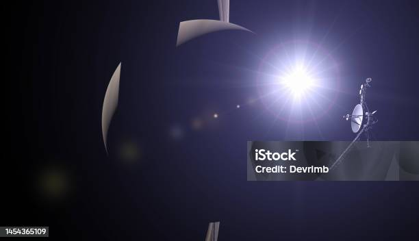
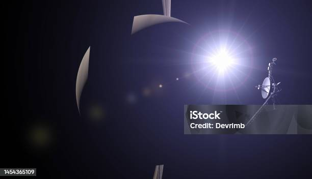

The Golden Record
Carl Sagan was task with the job of the golden record to have a message from the people of Earth. The Golden record was for any life form in outerspace to come across it and learn about Earth and its people. The record had a map its a diagram of where we are located in the galaxy. It also had the sounds of Earth's muusic, animals and the languages of all humans on it. This is a symbol of us and who we are as a planetary species. Voyager 1 was ahead of its time and so where the people that worked on the craft and all its components it is the embodiment of humanity and all its desire to explore the cosmos.
 

Voyager's twin
Voyager 2 was the twin of voyager 1 and it actully went up before voyager 1 due to trajectory windows and becuase the tasks for each was different. Voyager 2 had to two more planets being Unranus and then Neptune. Voayger 2 is just like the first craft and also has a golden record on board. Voyager 2 also has a deep journey through space. Voyager 1 and 2 are both still functional and we are still recieving data back from both spacecraft. Voyager 1 and 2 are now billions of billions of miles from us and are still holding up it is a true show of engineering and skill of Nasa and its people.
NASA's Voyager achievements
- First man made object to go interstellar.
- Voyager 2 is the only craft to visit Uranus and Neptune.
- Observation for the first ever captured a volcanoes erupting on another moon IO.
- First detections of lighting storms on another planet.